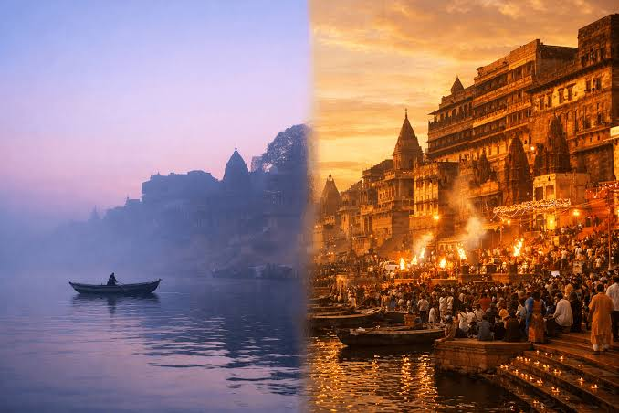

Varanasi, also known as Banaras, is one of the oldest continuously inhabited cities in the world. It is situated on the banks of the Ganges River in India. [1]
Varanasi has a history of more than 3,000 years and is an important center of religion and culture. [2]
The city lies on the western bank of the Ganges River in Uttar Pradesh. Its riverfront is lined with numerous ghats used for religious ceremonies. [3]
Varanasi is famous for classical music, Banarasi silk sarees, and religious festivals. It is also home to Banaras Hindu University. [4]
The city is famous for the Kashi Vishwanath Temple, Ganga Aarti, and its historic ghats, attracting millions of visitors every year. [5]